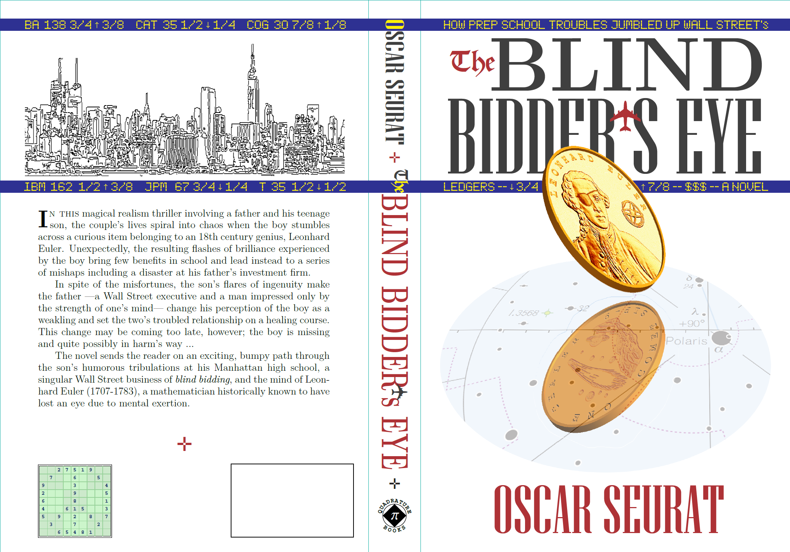

Chapter 1:
The Final Approach"
data-description="
This part of the globe may seem unfamiliar. Indeed, the vast majority of Earth's maps focus on the globe's opposite point: the central portion of the Atlantic (and squeeze Australia in the corner if needed).
Yet, the other part, almost entirely filled with water, has a life of its own ...
The Blind Bidder's Eye"
data-link="BBE_Images/Kiritimati.png">
Chapter 1:
The Final Approach" data-description="
Despite its remarkable location, the good times for the island below have ended half a century ago. Known by the natives as Kiritimati, it appears godforsaken today even though its English name is unusually uplifting (can you guess it?).
(dnalsI samtsirhC :rewsnA)
The Blind Bidder's Eye"
data-link="BBE_Images/Kiritimati.jpg">
Chapter 1:
The Final Approach" data-description="
Shaped like a slingshot, the very end of the island's 'handle' harbors an abandoned airfield that used to service heavy planes ...
The Blind Bidder's Eye"
data-link="BBE_Images/AeonField.png">
Chapter 4:
The St. Petersburg Paradox" data-description="
Professor Ross, a former military pilot, had a special affection for the C-5a, the largest plane in the US air fleet. His pupils would be wise not to put that fondness to a test ...
The Blind Bidder's Eye"
data-link="BBE_Images/C-5Ac.jpg">
Chapter 7:
Reputation" data-description="
The northern end of Finastut's trading floor.
The Blind Bidder's Eye"
data-link="BBE_Images/TradingFloor1b.jpg">
Chapter 14:
The Comet" data-description="
People used to view the 'visiting' stars—comets—with trepidation. 'Could the Heavens be sending us a warning?'—they asked.
What then was one to think in July 1994, when Comet SL-9 slammed into Jupiter? Was there anything unusual to follow?
In the lives of Harold Kenneday and his son Ulrick that summer week coincided with events they will never forget ...
The Blind Bidder's Eye"
data-link="BBE_Images/mssso9.gif">
Chapter 14:
The Comet" data-description="
The scars on the face of Jupiter appeared to have sent Harold's and Ulrick's lives into a tailspin. Or, at least, no one has provided a better explanation ...
The Blind Bidder's Eye"
data-link="BBE_Images/hst14.gif">
Chapter 31:
Dr. Franklin" data-description="
NYPD scuba divers examine the area around the Lower Manhattan Heliport in advance of a presidential visit.
The Blind Bidder's Eye"
data-link="BBE_Images/Frogmen1.jpg">
Chapter 31:
Dr. Franklin" data-description="
According to the frogmen things appear secure ...
The Blind Bidder's Eye"
data-link="BBE_Images/Frogmen3.jpg">
Chapter 31:
Dr. Franklin" data-description="
Three helicopters were sent; which of those will the President be stepping out of?
Double-click on the picture for a larger version.
The Blind Bidder's Eye"
data-link="BBE_Images/OnTheHelipad1.jpg">
Chapter 31:
Dr. Franklin" data-description="
Will he come out of this one? Can you guess?
Double-click on the picture for a larger version.
(enon :rewsnA)
The Blind Bidder's Eye"
data-link="BBE_Images/OnTheHelipad3b.jpg">
Chapter 29:
Nothing" data-description="
The view from Finanstut CEO's office. As indicated in the story, even the space 500ft off the ground gets a fair share of traffic in Manhattan.
The Blind Bidder's Eye"
data-link="BBE_Images/Chopper2b.jpg">
The Blind Bidder's Eye" data-description="
Notice the comet on the reflected side of the coin.
"
data-link="BBE_Images/CompleteCover.png">